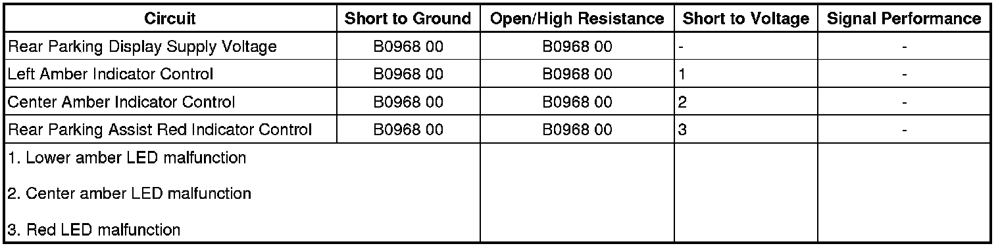

Information Center Telltale Malfunction
Information Center Telltale Malfunction
Diagnostic Instructions
* Perform the Diagnostic System Check - Vehicle (Initial Inspection and Diagnostic Overview) prior to using this diagnostic procedure.
* Review Strategy Based Diagnosis (Initial Inspection and Diagnostic Overview) for an overview of the diagnostic approach.
* Diagnostic Procedure Instructions (Initial Inspection and Diagnostic Overview) provides an overview of each diagnostic category.
Diagnostic Fault Information

Circuit/System Description
The object alarm system will use the rear parking assist (RPA) display indicators and the radio speakers to notify the driver when an object is within the object alarm system field of view. Power is provided to the RPA display by the object alarm module via the RPA display supply voltage circuit. The RPA display indicators are controlled by the object alarm module via the indicator control circuits. The object alarm module provides the ground for the indicator control circuits. The object alarm module is grounded at G401.
Reference Information
Schematic Reference
Object Detection Schematics ([1][2]Collision Avoidance and Parking Assist Systems)
Connector End View Reference
Component Connector End Views (Connector Views)
Description and Operation
Object Detection Description and Operation (Rear Park Assist) (Description and Operation)
Electrical Information Reference
* Circuit Testing (Component Tests and General Diagnostics)
* Connector Repairs (Component Tests and General Diagnostics)
* Testing for Intermittent Conditions and Poor Connections (Component Tests and General Diagnostics)
* Wiring Repairs (Component Tests and General Diagnostics)
Scan Tool Reference
Control Module References (Programming and Relearning) for scan tool information
Circuit/System Verification
1. Ignition ON, observe the scan tool Sensor Voltage Feed Output parameter. The reading should be between 8.0 V-9.0 V.
2. Perform the LED Test, using the scan tool. Observe the operation of the three LEDs. All three LEDs should illuminate.
Circuit/System Testing
1. Ignition OFF, disconnect the harness connector at the RPA display.
2. Ignition ON, verify that a test lamp illuminates between the 12V voltage supply circuit terminal A and ground.
• If the test lamp does not illuminate, test the voltage supply circuit terminal for a short to ground or an open/high resistance.
3. Connect a test lamp between the control circuit and the 12V voltage supply circuit terminal A of the appropriate LED listed below:
* Left amber LED control circuit terminal B
* Center amber LED control circuit terminal C
* Red LED control circuit terminal D
4. Command the appropriate LED ON and OFF with a scan tool, verify that a test lamp turns ON and OFF when switching between commanded states.
• If the test lamp does not illuminate, test the control circuit for a short to voltage or an open/high resistance. If the circuit tests normal, test or replace the object alarm module.
• If the test lamp is always ON, test the control circuit for a short to ground. If the circuit tests normal, test or replace the object alarm module.
5. If all circuits test normal, test or replace the RPA display.
Component Testing
1. Ignition OFF, disconnect the harness connector at the RPA display.
2. Connect a 10A fused jumper wire between 12V voltage supply circuit terminal A and B+.
3. Connect a 10A fused jumper wire between control circuit terminal and ground of the appropriate LED listed below:
* Left amber LED control circuit terminal B
* Center amber LED control circuit terminal C
* Red LED control circuit terminal D
4. Verify that the appropriate LED illuminates.
• If the component does not perform as specified, replace the RPA display.
Repair Instructions
Perform the Diagnostic Repair Verification (Verification Tests) after completing the diagnostic procedure.
* Information Center Telltale Assembly Replacement (Service and Repair)
* Control Module References (Programming and Relearning) for the object alarm module replacement, setup, and programming